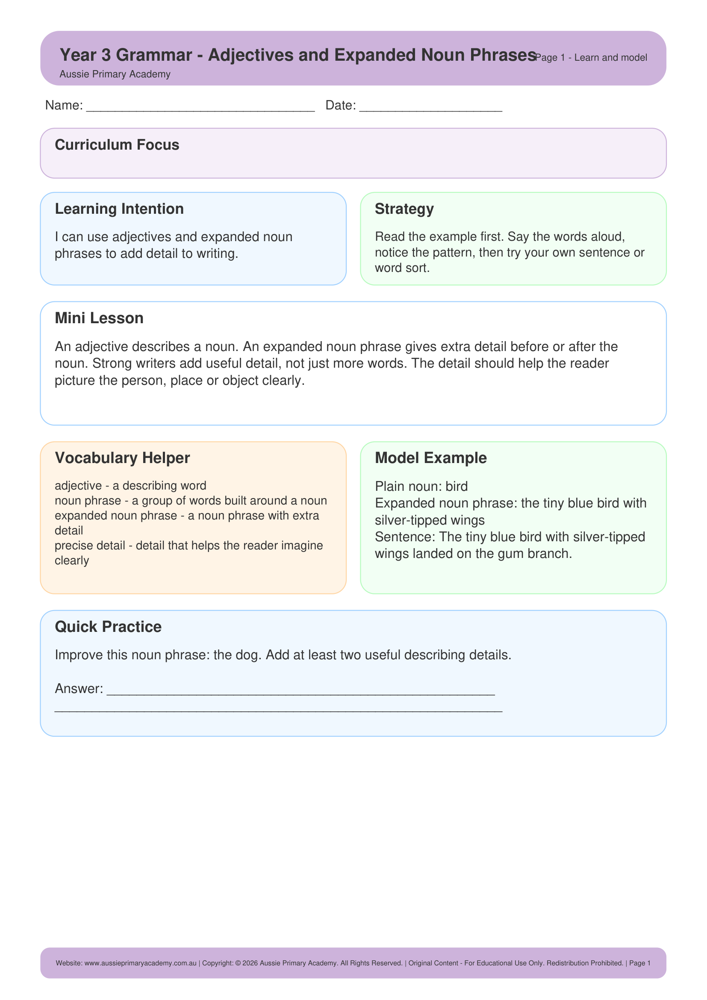

Year 3 · English · Grammar · Free Printable
Adjectives and Expanded Noun Phrases
Use adjectives to build expanded noun phrases that add detail and interest to writing.

Learning Intention
Students will use adjectives to create expanded noun phrases for more descriptive writing.
Australian Curriculum
AC9E3LA06
Understand how adjectives can be used to add detail to noun groups.
Teacher Notes
Start with simple noun + adjective, then expand with multiple adjectives and prepositional phrases.
Skills Practised
- Identifying adjectives
- Expanded noun phrases
- Descriptive writing
- Vocabulary building